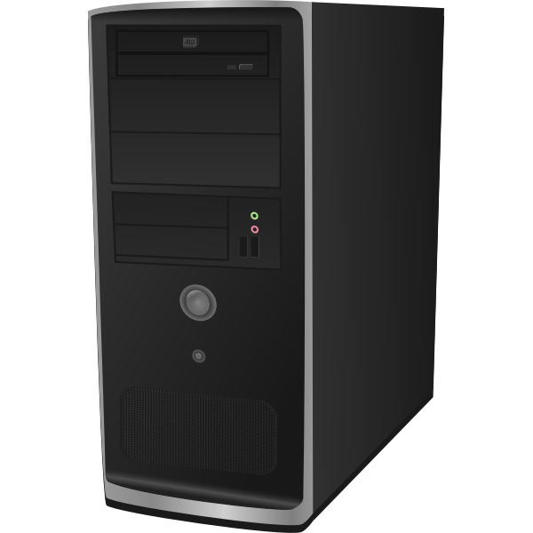
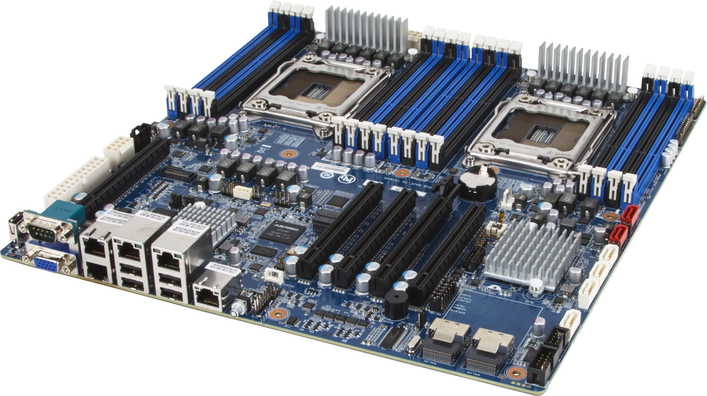
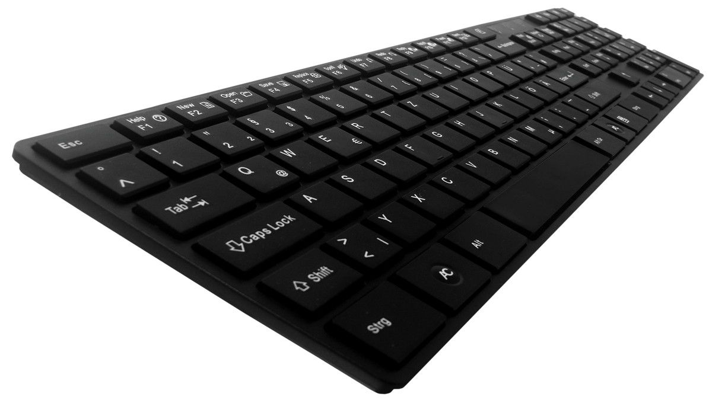
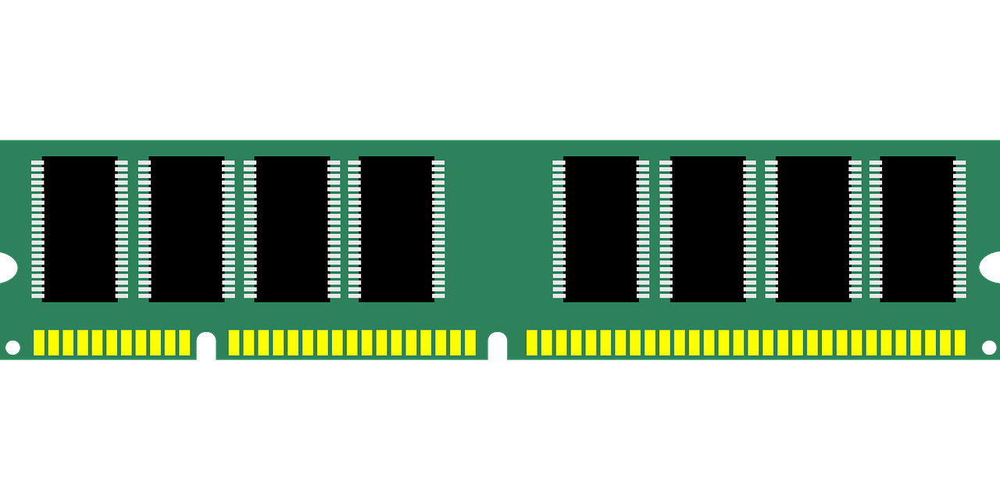
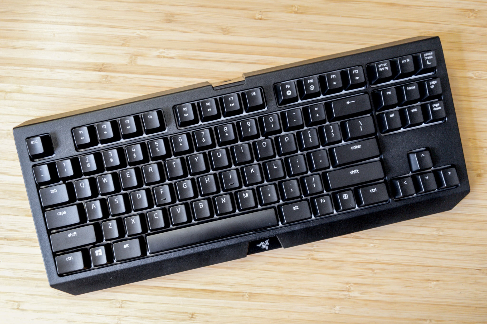
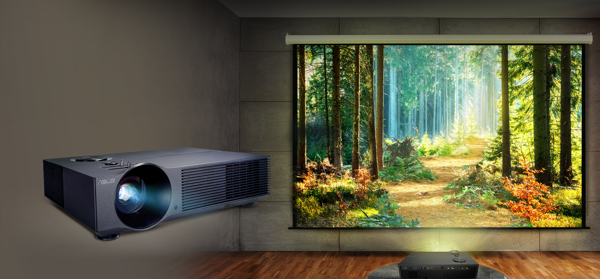
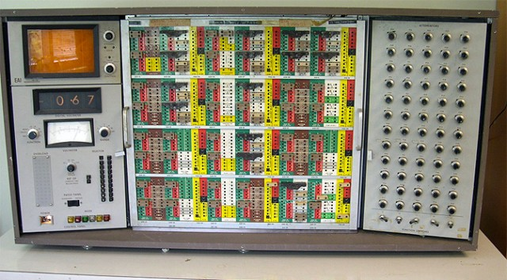

जाणून घेऊया संगणकाबद्दल
"संगणकाला इंग्लिश मध्ये कॉम्प्युटर (Computer) असे म्हणतात. संगणक हे माहिती स्वीकारणारे, दिलेल्या सूचना नुसार माहिती प्रक्रिया करून अचूक उत्तर देणारे वेगवान इलेक्ट्रॉनिक उपकरण आहे. "
संगणक(काँप्युटर) हे इलेक्ट्रॉनिक स्वरूपात माहिती विश्लेषण, माहिती प्रक्रिया, सांखिकी आकडेमोड करणारे एक उपकरण आहे.संगणक शब्दाची फोड – सं + गणक म्हणजे सूक्ष्म आणि किचकट विशेष सांख्यिकी गणना करण्यासाठी बनवले गेलेले आधुनिक यंत्र. Computer हा शब्द, Latin शब्दकोषातीला आहे “computare” या शब्दापासून computer शब्द बनवला गेलेला आहे.याचा अर्थ Calculation करने किंवा गणना करने असा आहे.
कॉम्प्युटर आता फक्त गणना करण्यापुरता मर्यादित नाही राहिलेत. या संगणकाच्या सहाय्याने तुम्ही तुमचा पर्सनल डेटा साठवून ठेवू शकता, तुमच्या महत्वाच्या फाइल्स तुम्ही यात सुरक्षित ठेवू शकतात, काही सेकंदात तुम्ही घरी बसून ई-मेल पाठवू शकतात, MOVIE बघू शकतात, फोटो विडिओ EDIT करू शकतात,आणि अजून अशा असंख्य गोष्टी तुमच्या या संगणकामुळे अगदी सोप्प्या झाल्या आहेत.
संगणकाचा शोध कोणी लावला?
स्कैनर

पेनड्राईव

संगणकांच्या आउटपुट डिव्हाइस ची यादी
मॉनिटर

प्रिंटर

प्रोजेक्टर

हेडफोन

संगणकाचा इतिहास
आपल्या प्राथमिक शिक्षणात अंक मोजणी आपण शकलो आहोत त्याच्यासाठी आजही मणि लावलेल्या पाटयाचा उपयोग करतात . प्राचीन काळी चीन मध्ये अंक मोजणी साठी बँबिलोनियन संस्कृतीत " अबँकस " (ABACUS) या यंत्राचा उपयोग केला जात होता.
१८७१ साली चार्ल्स बँबेज याच्या गणन यंत्रात अमुल्याग्र बदला घडून आले या यंत्राला सुचानाचा संच पुरविता यायचा स्मरण शक्ति व उत्तरांची छपाई करण्याची सोय ही या यंत्राची वैशिष्टे होती या यंत्राचे नाव अनोलिटिल इंजिन असे होते. संगणक फ़क्त १ किवा 0 हेच अंक समजू शकतो .म्हणुन खालील प्रमाने कंप्यूटरचा डाटा मोजला जातो.
संगणकाचे महत्वाचे भाग आणि त्यांची कार्ये
मित्रांनो, संगणक एक मशीन आहे आणि संगणकाच्या या मशीनरी parts ला संगणकाचे हार्डवेअर म्हटले जाते परंतु असे नाही की हार्डवेअर एकट्यानेच सर्व काम करू शकते. संगणकाचा दुसरा भाग देखील असतो ज्याला आपण सॉफ्टवेअर म्हणतो आणि याच सॉफ्टवेअरच्या मदतीने हार्डवेअरला सूचना देण्यात येतात.
संगणकाचे महत्वाचे भाग आणि त्यांची कार्ये
असे समजा कि हार्डवेअर संगणकाचे शरीर आहे तर सॉफ्टवेअर हे संगणकाचा आत्मा आहे. आणि दोघांनी काम करणे आवश्यक आहे,कोणतेही काम करण्यासाठी ते संगणकाशी संबंधित असलेल्या सर्व बाबींमधून महत्वाचे आहेत. हार्डवेअरचे आणि त्यांचे स्वतःचे स्वतंत्र कार्य आहेत जसे कि कीबोर्ड इनपुट देते आणि प्रिंटर आपल्याला आउटपुट देते अशा प्रत्येक कॉम्प्युटर parts चे वेग वेगळे कार्य आहेत, त्या गोष्टींबद्दल सविस्तर जाणून घेऊया.
हार्डवेअर
हार्डवेअर हा संगणकाचा कोणताही भौतिक भाग आहे ज्यामध्ये अंतर्गत घटक आणि मॉनिटर आणि कीबोर्ड सारखे बाह्य भाग समाविष्ट असतात.
सॉफ्टवेअर
सॉफ्टवेअर म्हणजे सूचनांचा कोणताही संच जो हार्डवेअरला काय करावे हे सांगतो, जसे की वेब ब्राउझर, मीडिया प्लेयर किंवा वर्ड प्रोसेसर.
माउस संगणकाचा वापर सुलभ करते, हे एक प्रकारे रिमोट डिव्हाइस तसेच माउस इनपुट डिव्हाइस आहे. यामुळे आपल्याला मॉनिटर वर कोणतिही गोष्ट हाताळणे सहज सोप्पे होते.
मॉनिटर किंवा एलसीडी: – मॉनिटर चा उपयोग म्हणजे संगणकात चालू असलेल्या किंवा आपण कार्य करत असलेल्या सर्व गोष्टीं प्रदर्शित करणे. मॉनिटर हे एक आउटपुट डिव्हाइस आहे.
संगणकाचे महत्वाचे भाग आणि त्यांची कार्ये

सीपीयू (सेंट्रल प्रोसेसिंग युनिट): – CPU हा संगणकाचा एक महत्त्वाचा भाग आहे. CPU ला संगणकाचा मेंदू देखील म्हणतात. कारण संगणकाच्या सर्व महत्वाचे भाग जसे कि MOTHERBOARD, RAM, मेमोरि, CD-DRIVE इत्यादी यातच फिट केलेले असते.

मदर बोर्ड (Motherboard) हे संगणकाचे ह्रदय आहे. याला सिस्टमचा मेनबोर्ड असे ही म्हणतात. संगणका मधले सर्व डिव्हाईस एकत्र आणण्याचे काम मदर बोर्ड करतो.

संगणकात टाइप करण्यासाठी वापरले जाते, ते एक इनपुट डिव्हाइस आहे, आपण फक्त कीबोर्डद्वारे संगणक चालवू शकतो. कारण कीबोर्ड नसेल तर कोणताही इनपुट देणे अशक्य होईल.

CPU म्हणजे प्रोसेसर नतर मेमरी हा संगणकाचा महत्वाचा भाग आहे. मेमरी म्हणजे स्मरणशक्ति होय.ही मेमरी CPU मध्ये मदर बोर्ड वर स्लोट मध्ये लावली जाते .
संगणकाचे महत्वाचे भाग आणि त्यांची कार्ये
इनपुट म्हणजे काय?
माउस किंवा कीबोर्ड (Input device) द्वारे दिलेल्या निर्देशाला इनपुट म्हणतात.
आउटपुट म्हणजे काय?
यूजर ने दिलेल्या कमांडच्या किंवा सूचनेच्या आधारे प्रक्रिया केलेल्या माहितीचे आउटपुट आपल्याला संगणकाद्वारे दिले जाते, जे आपल्याला आउटपुट डिव्हाइस किंवा आउटपुट युनिटद्वारे प्राप्त होते.
संगणकांच्या इनपुट डिव्हाइस ची यादी
की-बोर्ड

प्रोजेक्टर

संगणकाचे वर्गीकरण :
अॅनालॉग कॉम्प्युटर

अॅनालॉग संगणकांना असे संगणक म्हणतात, जे माहिती प्रदर्शित करण्यासाठी analog signal वापरतात. Analog computers चा वापर analog data वर प्रक्रिया करण्यासाठी केला जातो.उदा… वेग, तापमान, दाब, वीज, ई. हे अनालॉग डेटा ची उदाहरणे आहेत.
 डिजिटल संगणक
डिजिटल संगणक
Digital Computer मध्ये मिळालेल्या सूचना Binary Number च्या स्वरूपात साठवून ठेवण्याची क्षमता असते.Binary Number मध्ये 0 आणि 1 हे दोनच संख्या असतात. गतीच्या तुलनेत हे Analog Computer पेक्षा थोडे हळू असतात, यांची अचुकता जास्त असते.उदा… Calculator, हातातले घड्याळ, ई.
संगणकाचे वर्गीकरण :
हायब्रीड संगणक
Analog Computer आणि Digital Computer या दोघांचे एकत्रित वैशिष्ट्य असणारे संगणक म्हणजे हायब्रीड संगणक. हायब्रीड संगणक हे Analog आणि Digital पेक्षा अचूक आणि गतीवान असतात.उदा… पेट्रोल पंप मशीन, स्पीडोमीटर, ई.
संगणकाचे नेटवर्क :
दोन किवा त्या पेक्षा जास्त संगणक एकमेकाना जोडून केलेली रचना त्याला संगणकाचे नेटवर्क असे म्हणतात . नेटवर्क मध्ये माहितीची देवाण घेवाण करता येवू शकते .